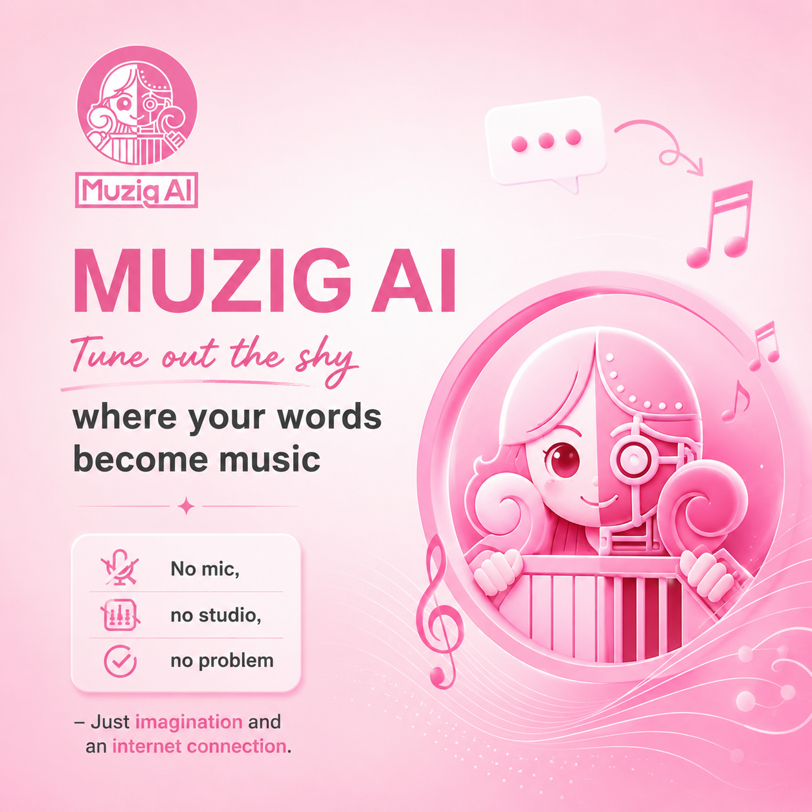
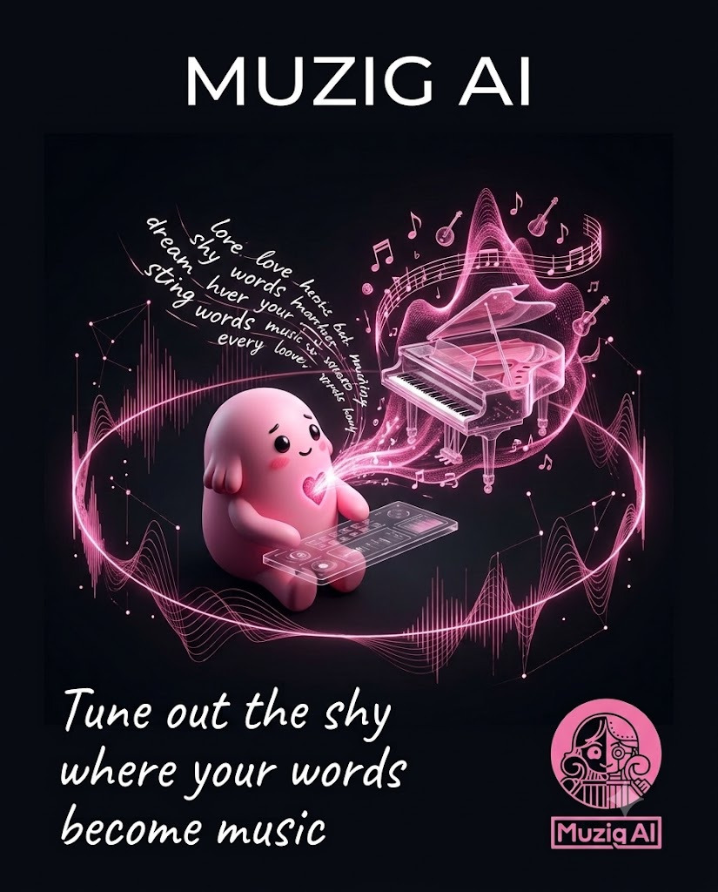
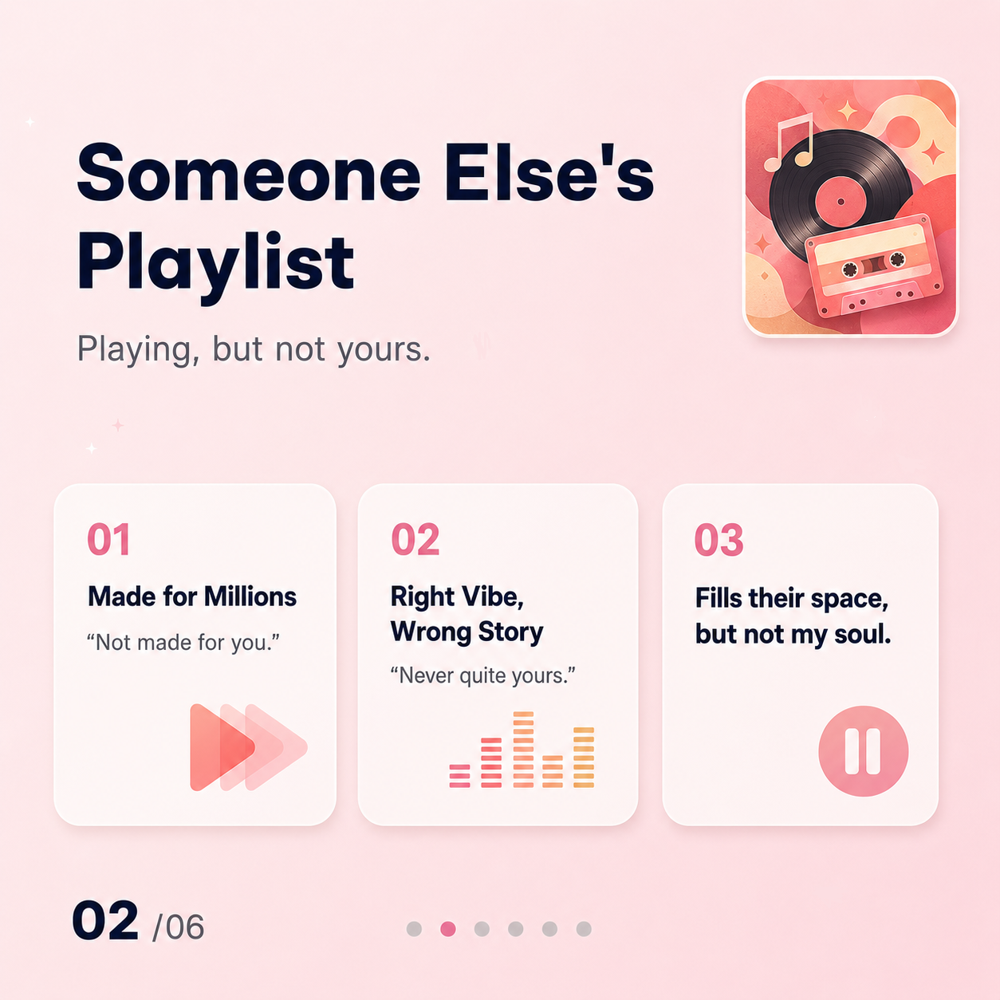
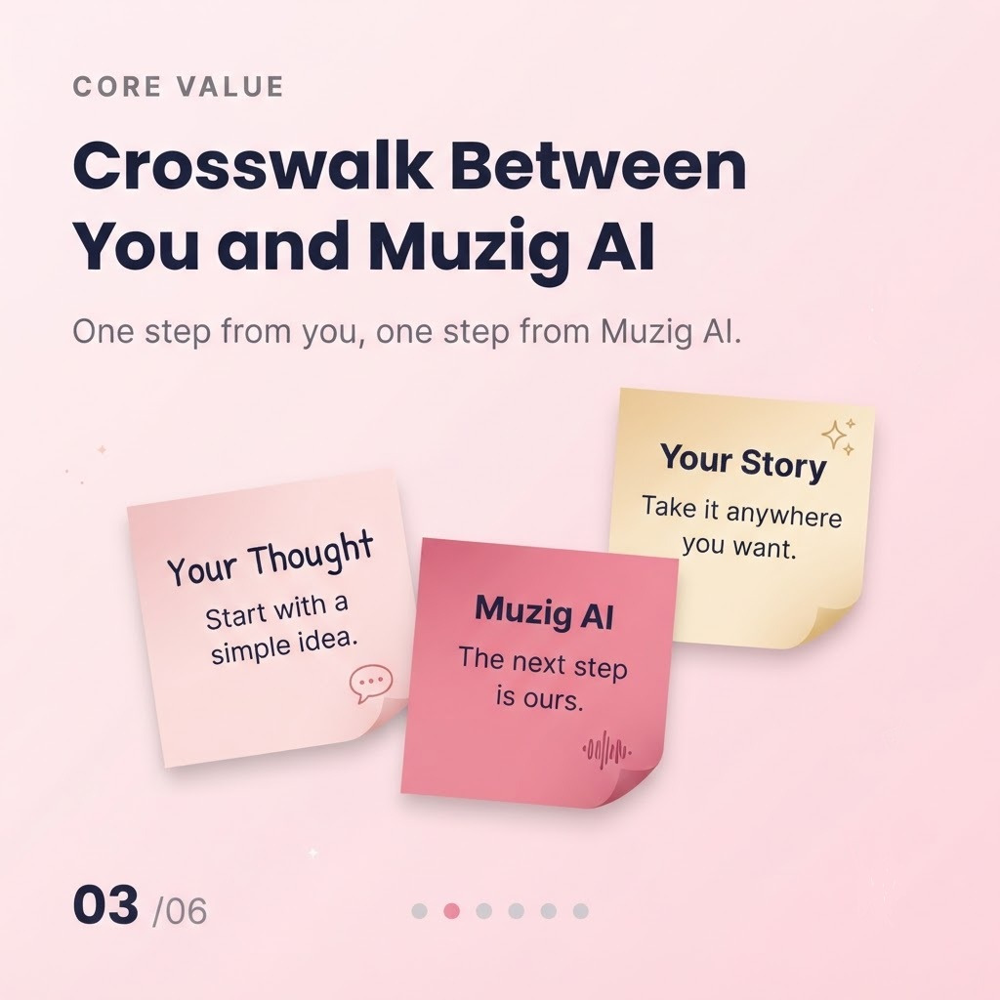
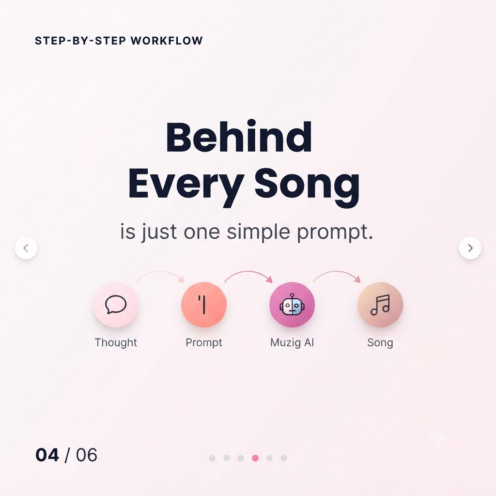
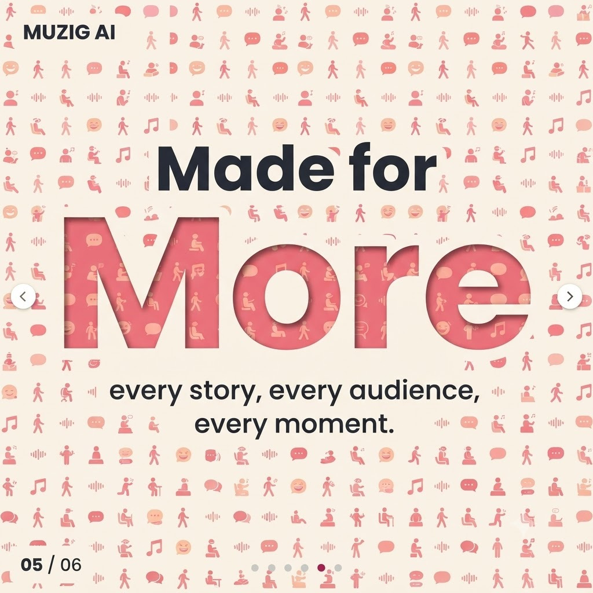
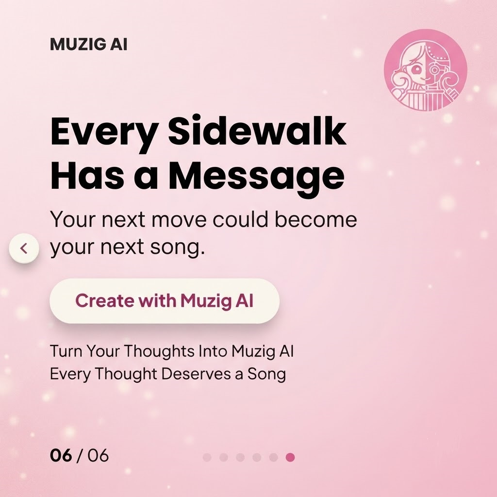

IMAGE TO BGM이미지 한 장,
이미지 한 장,
어울리는 배경음악
이미지를 출발점으로 BGM을 생성하는 과정을 짧은 영상으로 소개합니다.
Muzig AI를 주제로 제작한 캠페인 포스터, 카드뉴스, 쇼츠 영상 세 편을 한곳에 모았습니다. 기획부터 영상 편집까지 이어진 SNS 콘텐츠 제작 실습의 결과물입니다.
작업물 살펴보기
포스터 · 1점

어두운 배경과 핑크 네온을 대비시켜 음악 생성의 상상력을 시각화한 포스터입니다. 카드뉴스의 밝은 톤과는 다른 분위기를 통해 캠페인의 시각적 폭을 보여줍니다.
MUZIG AI · 캠페인 포스터
카드뉴스 · 1세트 / 6장
옆으로 넘기면 1번부터 6번까지 볼 수 있습니다 →





쇼츠 · 3편 / 페이지 내 재생
이미지를 출발점으로 BGM을 생성하는 과정을 짧은 영상으로 소개합니다.
효과음을 더했을 때 영상의 체감이 어떻게 달라지는지 보여주는 콘텐츠입니다.
텍스트로 표현한 분위기를 AI 음악으로 만드는 과정을 소개합니다.
롱폼 영상은 음성 및 전체 수정 대기 중이므로 현재 전시에서 제외했습니다.
하이미디어 SNS 광고홍보 콘텐츠 제작 과정에서 진행한 개인 실습 작업물을 전시합니다. 포스터 1점, 카드뉴스 1세트, 쇼츠 3편을 공개하고 있습니다.
제작 방식 · AI 도구 협업, 콘텐츠 기획 및 영상 편집
영상의 음악·효과음 등에는 Muzig AI 생성 기술이 활용되었습니다. 페이지의 HTML·CSS 구현에는 ChatGPT의 도움을 받았습니다. 이 페이지는 Muzig AI의 공식 광고 또는 공식 사이트가 아닌 개인 학습·포트폴리오용 페이지입니다. AI 생성 도구 출처: @Muzig AI.